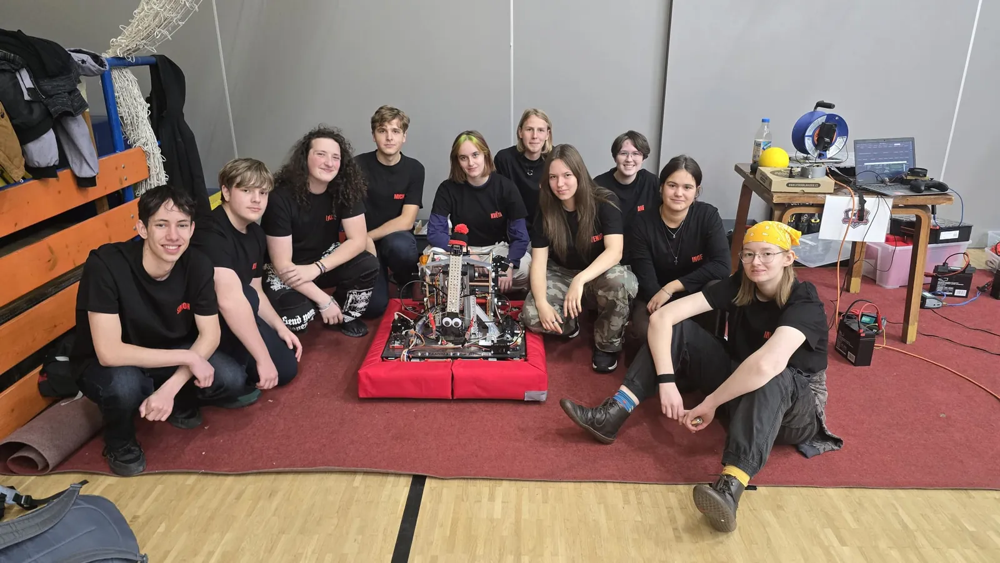
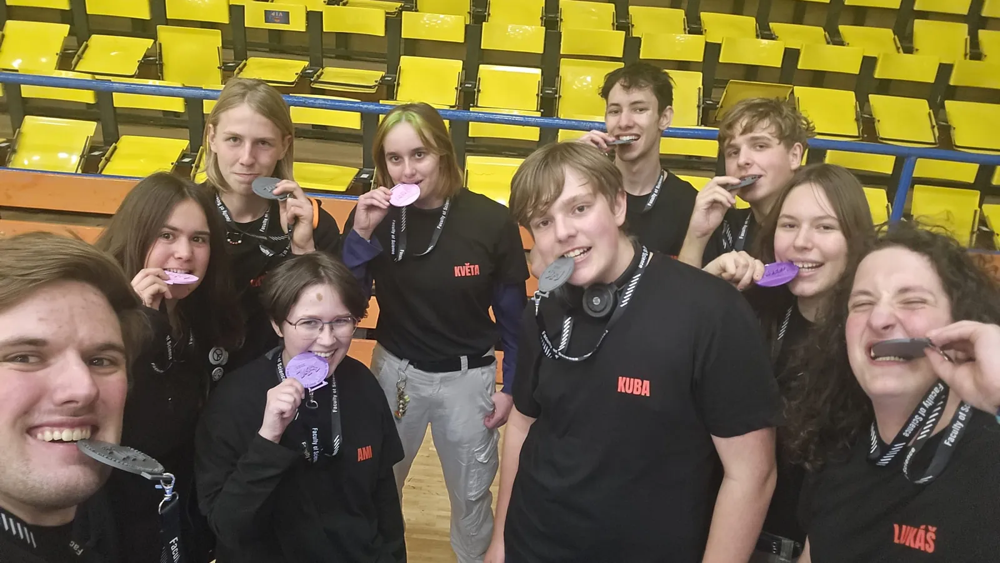
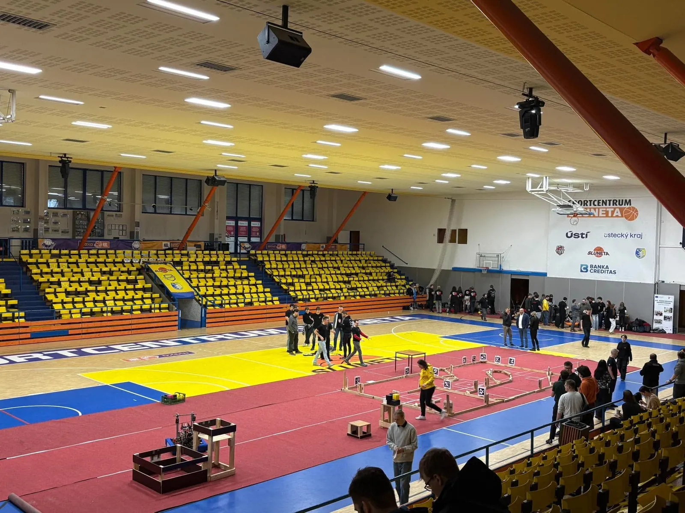
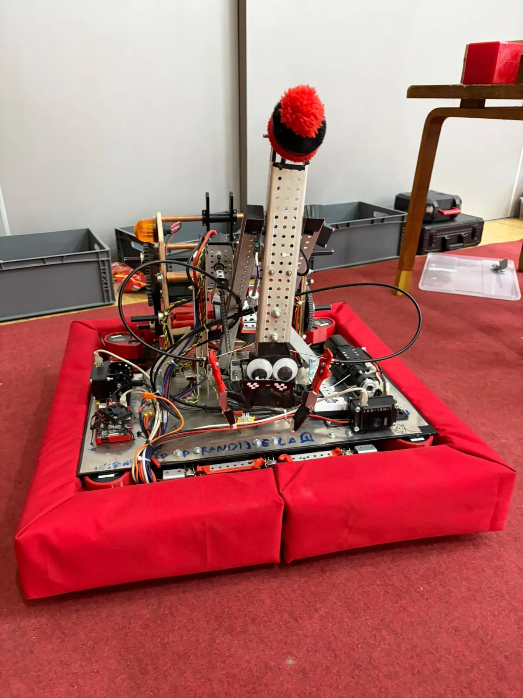
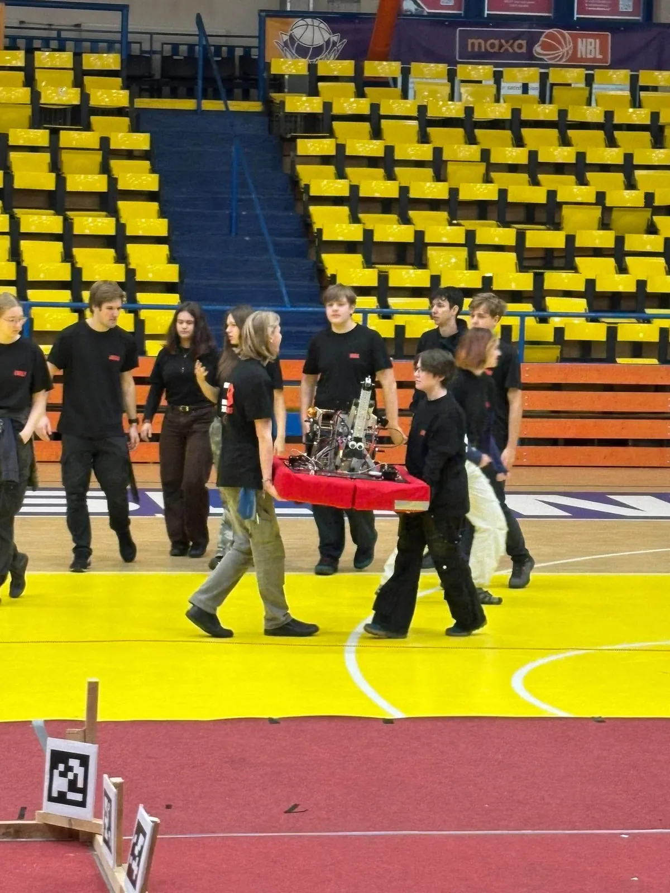
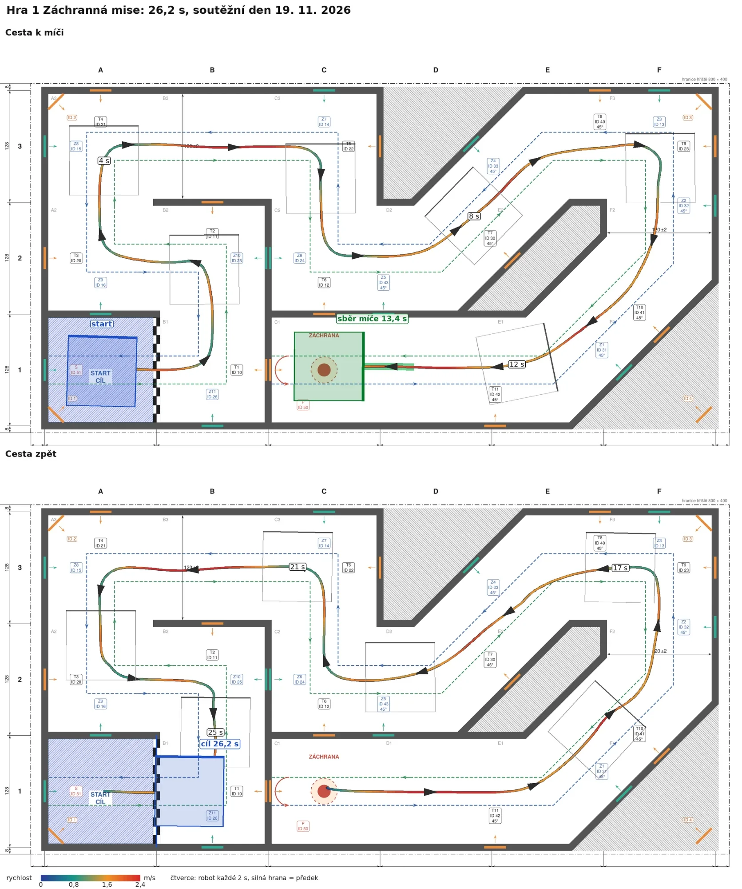
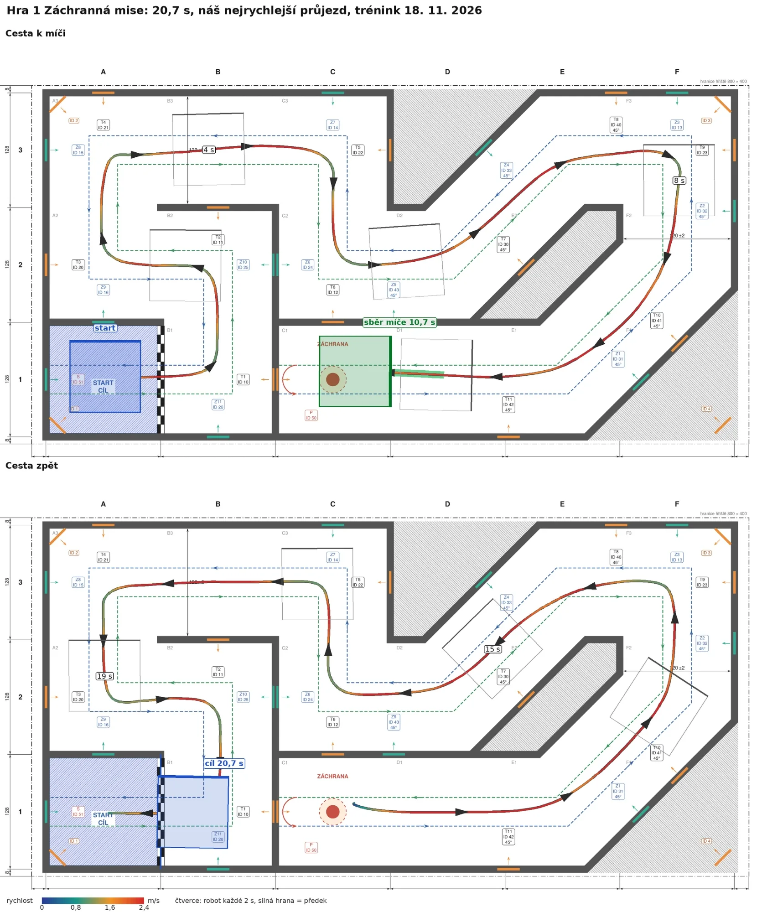
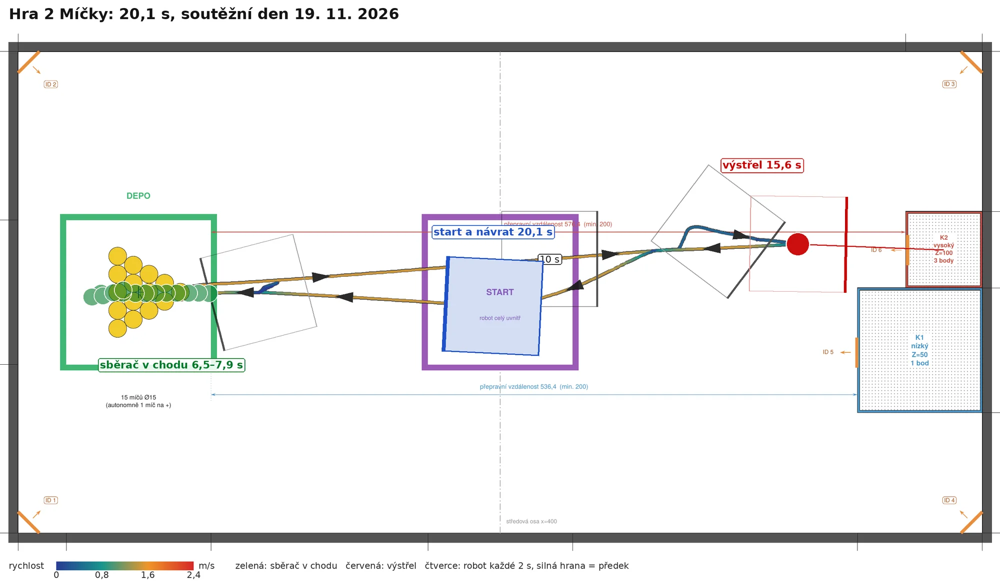
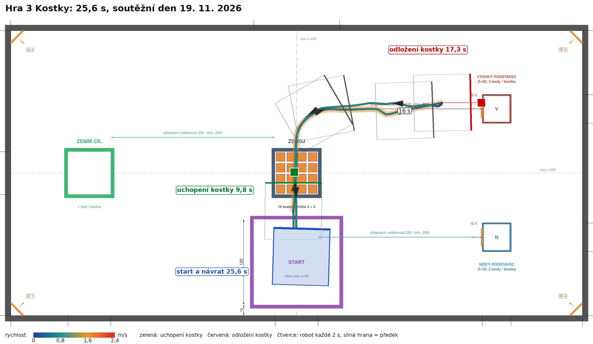
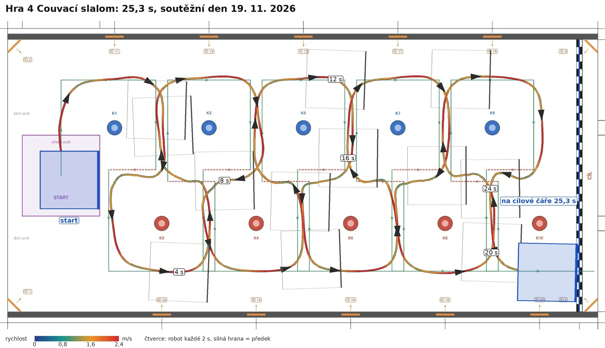

01 / CircuitBreakers
CIRCUIT BREAKERS
Jsme středoškolský tým z Litoměřic. Navrhujeme, stavíme a programujeme soutěžní roboty.
scrolldolů
02 / Kdo jsme
Stavíme soutěžní roboty
CircuitBreakers je středoškolský robotický tým z Litoměřic. Fungujeme jako jeden ze čtyř regionálních týmů projektu RobUL.
V týmu se věnujeme mechanice, elektronice, programování i strategii. Robota průběžně navrhujeme, vyrábíme, testujeme a podle výsledků dál upravujeme. Ten letošní se jmenuje Rosettijela, říkáme mu Rosi.
Členové CircuitBreakers ↗CircuitBreakers = regionální tým v Litoměřicích
RobUL #9585 = výběrový FRC tým pro mezinárodní soutěž

03 / 19. 11. 2026
Regionální robotická soutěž Ústeckého kraje / SLUNETA
První místo
a 12 bodů
Druhý ročník měl čtyři úkoly: Záchranná mise, Míčky, Kostky a Couvací slalom. Každý se jel v ručním i autonomním režimu.
TýmBody
CIRCUITBREAKERS12
CHOBOT10
PAPERBOX4
LEDbot1
04 / Zvláštní ceny
Cena odborné poroty / Cena PR a marketingové poroty
Dvě poroty,
dvě ceny
Vedle bodů za úkoly se na soutěži udělovaly i zvláštní ceny. O dvou z nich rozhodovaly poroty a obě jsme vyhráli. Na tyhle dvě jsme hrdí nejvíc.

-
01
Cena odborné poroty
Hodnotilo se: technické provedení a konstrukce robota
Odborná porota si roboty prošla po technické stránce a hodnotila, jak jsou navržené a postavené. Za Rosi jsou měsíce návrhů, výroby a testování v dílně. Tahle cena pro nás znamená, že ta práce je na ní vidět.
-
02
Cena PR a marketingové poroty
Hodnotilo se: web, sociální sítě a týmový duch
Druhá porota sledovala, jak se tým prezentuje navenek: web, sociální sítě a to, jak spolu jako tým působíme. Robotika pro nás není jen volnočasový kroužek, ale i lidi kolem něj. A ano, hodnotil se i tenhle web.
05 / Na soutěži
Den ve Slunetě
Čtvrtek 19. listopadu 2026, Sportcentrum SLUNETA v Ústí nad Labem. Pár fotek z našich telefonů.



Soutěž studentských robotů v Ústí nad Labem
Reportáž České televize / Události v regionech / 20. 11. 2026
Reportáž České televize / 20. 11. 2026 ↗
Přehrát na webu České televize ↗
06 / Jízdy
Čtyři úkoly / autonomní i ruční jízdy
Kudy Rosi
jela
U každého ze čtyř úkolů je do plánku hřiště zakreslená trasa, kterou Rosi projela. Všechny čtyři úkoly tu jsou z autonomní jízdy, u Míčků a Kostek jde přepnout i na ruční jízdu. V ruční jízdě jsme za Míčky získali 42 bodů a za Kostky 33 bodů, v obou hrách to bylo nejvyšší skóre soutěže. Barva čáry ukazuje rychlost od 0 do 2,4 m/s. U autonomních jízd čtverce značí polohu robota každé 2 sekundy a jejich silná hrana je předek robota. Zeleně je vyznačený sběr míčků nebo uchopení kostky, červeně výstřel nebo odložení kostky.
Klepnutím se plánek zvětší. Dalším klepnutím přepneš mezi celým plánkem a detailem.







07 / Swerve pohon
Vyzkoušej si řízení
Každé kolo
zatáčí zvlášť
Páčkou určíš směr jízdy po hřišti, i když je robot otočený. Tlačítky ho otáčíš, dokud je držíš. Ukázka pro každé kolo průběžně počítá, kam se má natočit a jak rychle se má točit.
Výpočet pro každé koloNatočení robota 0°úhel vůči přídi robota
- Levé přední
- 0°natočení
- 0 %pohon
- Pravé přední
- 0°natočení
- 0 %pohon
- Levé zadní
- 0°natočení
- 0 %pohon
- Pravé zadní
- 0°natočení
- 0 %pohon
Schéma principu swerve pohonu. Nejde o simulaci skutečného výkonu našeho robota.
- Směr jízdy
- –
- Rychlost
- 0 %
- Otáčení
- 0 %
- Natočení
- 0°
08 / RobUL
Čtyři města / jeden výběrový tým
Čtyři regionální týmy
v síti RobUL
Od školního roku 2025/2026 funguje RobUL jako síť čtyř regionálních týmů. CircuitBreakers je regionální tým pro Litoměřice. Vybraní členové regionálních týmů mohou být součástí výběrového FRC týmu RobUL #9585.
Jak regionální týmy fungují ↗01CHOBOTChomutov
02PaperBoxŠtětí
03LEDbotÚstí nad Labem
04CircuitBreakersLitoměřice
Co nás čeká / FIRST Robotics Competition 2027
Eindhoven, duben 2027
Vítěz regionální soutěže reprezentuje Ústecký kraj na regionálním kole FIRST Robotics Competition 2027 v nizozemském Eindhovenu. Jádro výběrového týmu RobUL #9585 tvoří podle pravidel soutěže členové vítězného týmu, doplní je členové ostatních regionálních týmů.
Co o soutěži píše RobUL ↗Ohlédnutí / Denver Regional / jaro 2026
Na jaře 2026 byli dva z nás v Denveru
Na Denver Regional tehdy jel výběrový tým RobUL #9585. CircuitBreakers tam nesoutěžil jako samostatný FRC tým, dva naši členové ale byli v jeho sestavě. Tým dokončil kvalifikaci na 34. místě z 55 a do vyřazovací části nastoupil jako součást 7. aliance.
Jak to tehdy dopadlo ↗09 / Kontakt
Napiš nám
na Instagram
Zajímá tě programování, mechanika, elektronika, CAD nebo strategie? Pokud se chceš přidat, na něco se zeptat nebo se přijít podívat, napiš nám na Instagram. Tam se ti ozveme nejrychleji.